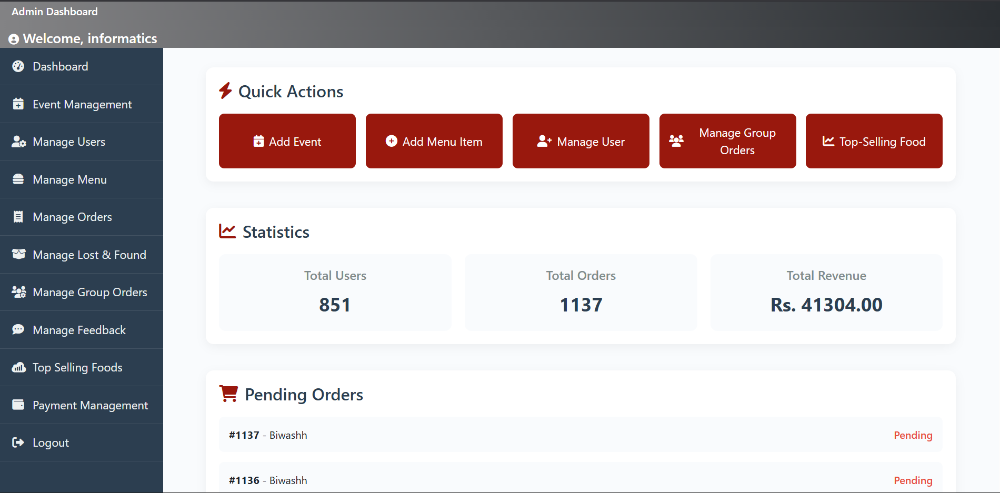

Informatics Cafeteria System
Project Introduction
The Informatics Cafeteria is a full-stack digital transformation project designed to bridge the gap between traditional canteen services and the modern needs of a growing academic institution. As the student population at Informatics College Pokhara expanded to nearly 800 individuals, the existing manual ordering infrastructure became a significant bottleneck in daily campus operations.
Project Description
This web application provides a centralized digital platform where students, faculty, and staff can manage their dining needs asynchronously. Developed using the Django framework and MySQL, the system features a dynamic, image-rich menu, secure user authentication, and a robust backend to handle concurrent order processing. Beyond simple transactions, the project integrates complex logistical features like Dine-in/Takeaway scheduling and Group Ordering.
Payment Integration
User Capacity
Order Tracking
The Problem: The Manual Bottleneck
Before the implementation of this system, the Informatics Cafeteria relied entirely on physical queues and manual counter transactions. Critical pain points identified include:
- Time Inefficiency: With 785 students and 66 staff members, wait times often exceeded lunch break durations.
- Academic Disruption: Long queues led to students and lecturers arriving late for scheduled classes.
- Operational Chaos: Manual recording during "rush hours" led to frequent miscommunication and order inaccuracies.
The Solution: A Streamlined Digital Ecosystem
The system serves as a comprehensive solution by digitizing the lifecycle of a food order, built on an Incremental Development Methodology.

- Queue Elimination: Users place orders via the web app from anywhere, only visiting the counter when their tracker signals the order is "Ready."
- Resource Planning: The Dine-in/Takeaway scheduling allows kitchen staff to view upcoming demand and balance workloads.
- Data Integrity: An integrated Admin Panel replaces manual ledger-keeping with automated reporting and analytics.
Strategic Analysis (SWOT)
Strengths
User-friendly UX, responsive design, secure Khalti integration, and unique Group Ordering logic.
Weaknesses
Currently limited to Khalti/Cash payments and certain manual dependencies for Lost & Found.
Access Control Matrix
| Entity | Admin (C R U D) | User (C R U D) |
|---|---|---|
| Profile Management | ✔ ✔ ✔ ✔ | ✔ ✘ ✔ ✘ |
| Food Items & Menu | ✔ ✔ ✔ ✔ | ✘ ✔ ✘ ✘ |
| Cart & Ordering | ✔ ✔ ✔ ✔ | ✔ ✘ ✔ ✔ |
| Payments & Reports | ✔ ✔ ✔ ✔ | ✔ ✘ ✔ ✘ |
Risk Management
| Identified Risk | Mitigation Strategy |
|---|---|
| System Crash (Busy Hours) | Implementing server-side load balancing and weekly health monitoring. |
| Payment Gateway Downtime | Automated alert messages to switch users to Cash on Delivery. |
Quality Assurance Approach
- Black Box Testing: Functional verification of ordering and payment flows.
- Unit Testing: Code-level validation of Django methods and Python logic blocks.